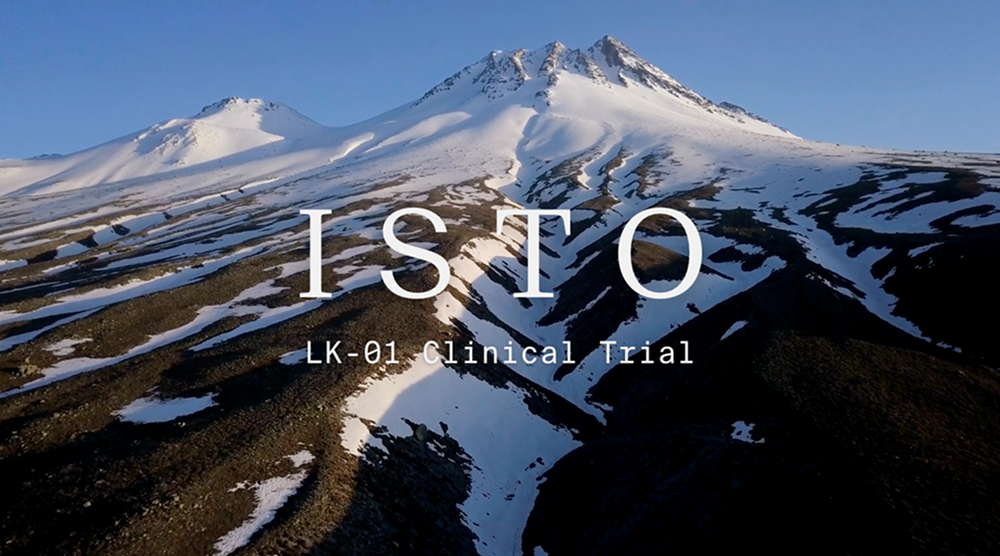

LK-01 Pure Salidroside Clinically Proven to Improve Resiliency and Mood
Featured In
CLINICALLY PROVEN
ISTO
The ISTO Clinical Study is a randomized, double-blind human study that shows LK-01™ Pure Salidroside supports oxygen uptake and mood state. The preliminary results of our clinical study support LK-01 as a must-have for improved endurance and resiliency.

Industry-changing consistency, purity, and efficacy.
Bioengineered to help you reach your peak
08+
Years of research
MIT+YALE
Developed by world-leading scientists
300+
Peer-reviewed studies
What’s inside?
All of nature’s healing wisdom.
Boost your focus
Encourages higher measures of mental performance like associative thinking, short-term memory, and concentration to help you reach your peak cognitive function.
Increase your energy
Enhances ATP production and mitochondrial function to support your natural energy levels and promote cellular repair.